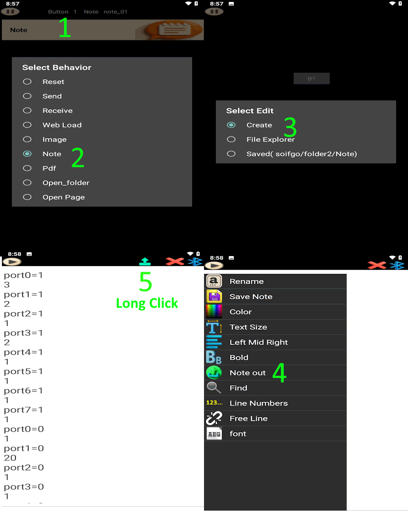

First, create a button and set its behavior to Note. Choose Create to generate a blank note. Then go to the Play page, click the button to open the note, and from the menu or play icon select Note Out to see the list of communication methods. For example, choose Bluetooth and return to the note. Now you can start writing the required commands line by line.
At the top of the page, you will see the Send icon. By long-clicking on this icon, a list of settings will appear:
In this method, every line is sent with the same delay. You simply write the commands normally, and the system applies a uniform delay between each line.
Example:
START_MACHINE
SET_SPEED 1200
MOVE_X 50
MOVE_Y 30
STOP_MACHINE
Here, each command line will be sent one after another with the same delay (e.g., 2 seconds).
In this method, you can define different delays for each command. The first line is the command, and the next line is only the delay time in seconds.
Example:
START_MACHINE
3
SET_SPEED 1200
5
MOVE_X 50
2
MOVE_Y 30
4
STOP_MACHINE
In this example:
START_MACHINE is sent, then waits 3 seconds.SET_SPEED 1200 is sent, then waits 5 seconds.MOVE_X 50 is sent, then waits 2 seconds.MOVE_Y 30 is sent, then waits 4 seconds.STOP_MACHINE is sent at the end.Each communication method (Bluetooth, API, MQTT) has its own specific settings. Below are the main options for Bluetooth (similar concepts apply to API and MQTT):
CR+LF, CR, NULL, etc.next or NEXT after each command.
This is useful for tasks with uncertain completion times.
Example: A conveyor or crane may take 2–30 seconds to finish moving a heavy load.
Once the task is complete, the destination sends NEXT back, signaling Soifgo to continue with the next line.These settings allow you to adapt Note Out for different devices and scenarios, ensuring both reliability and flexibility in communication.
